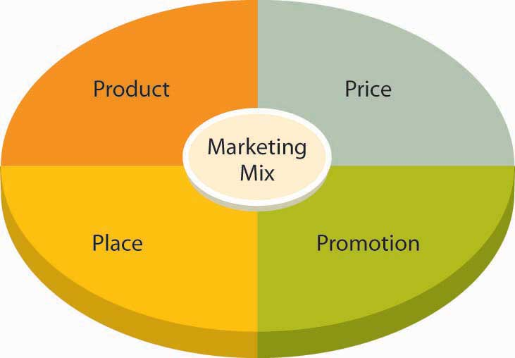

After identifying a target market, your next step is developing and implementing a marketing program designed to reach it. As Figure 9.4 "The Marketing Mix" shows, this program involves a combination of tools called the marketing mixCombination of product, price, place, and promotion (often called the four Ps) used to market products., often referred to as the “four Ps” of marketing:
Figure 9.4 The Marketing Mix
The goal is to develop and implement a marketing strategy that combines these four elements. To see how this process works, let’s look at Wow Wee Toys’ marketing program for Robosapien.Information in this section was obtained through an interview with the director of marketing at Wow Wee Toys Ltd. conducted on July 15, 2004.
The development of Robosapien was a bit unusual for a company that was already active in its market. Generally, product ideas come from people within the company who understand its customers’ needs. Internal engineers are then challenged to design the product. In the case of Robosapien, however, the creator, Mark Tilden, had conceived and designed the product before joining Wow Wee Toys. The company gave him the opportunity to develop the product for commercial purposes, and Tilden was brought on board to oversee the development of Robosapien into a product that satisfied Wow Wee’s commercial needs.
Robosapien is not a “kid’s toy,” though kids certainly love its playful personality. It’s a home-entertainment product that appeals to a broad audience—children, young adults, older adults, and even the elderly. It’s a big gift item, and it has developed a following of techies and hackers who take it apart, tinker with it, and even retrofit it with such features as cameras and ice skates. In fact, Tilden wanted the robot to be customizable; that’s why he insisted that its internal parts be screwed together rather than soldered.
Before settling on a strategy for Robosapien, the marketers at Wow Wee did some homework. First, to zero in on their target market, they had to find out what various people thought of the product. More precisely, they needed answers to questions like the following:
The last question would be left up to Wow Wee management, but, given the size of the investment needed to bring Robosapien to market, Wow Wee couldn’t afford to make the wrong decision. Ultimately, the company was able to make an informed decision because its marketing team provided answers to all the other questions. They got these answers through marketing researchProcess of collecting and analyzing data that’s relevant to a specific marketing situation.—the process of collecting and analyzing the data that are relevant to a specific marketing situation.
This data had to be collected in a systematic way. Market research seeks two types of data:
You can get secondary data from inside or outside the organization. Internally available data includes sales reports and other information on customers. External data can come from a number of sources. The U.S. Census Bureau, for example, posts demographic information on American households (such as age, income, education, and number of members), both for the country as a whole and for specific geographic areas. You can also find out whether an area is growing or declining.
Population data helped Wow Wee estimate the size of its potential U.S. target market. Other secondary data helped the firm assess the size of foreign markets in regions around the world, such as Europe, the Middle East, Latin America, Asia, and the Pacific Rim. This data positioned the company to sell Robosapien in eighty-five countries, including Canada, England, France, Germany, South Africa, Australia, New Zealand, Hong Kong, and Japan.
Using secondary data that are already available (and free) is a lot easier than collecting your own information. Unfortunately, however, secondary data didn’t answer all the questions that Wow Wee was asking in this particular situation. To get these answers, the marketing team had to conduct primary research: they had to work directly with members of their target market. It’s a challenging process. First, they had to decide exactly what they wanted to know. Then they had to determine whom to ask. Finally, they had to pick the best methods for gathering information.
We know what they wanted to know—we’ve already listed the questions they asked themselves. As for whom to talk to, they randomly selected representatives from their target market. Now, they could have used a variety of tools for collecting information from these people, each of which has its advantages and disadvantages. To understand the marketing-research process fully, we need to describe the most common of these tools:
Wow Wee used focus groups and personal interviews because both approaches had the advantage of allowing people to interact with Robosapien. In particular, focus-group sessions provided valuable opinions about the product, proposed pricing, distribution methods, and promotion strategies. Management was pleased with the feedback and confident that the product would succeed.
Researching your target market is necessary before you launch a new product. But the benefits of marketing research don’t extend merely to brand-new products. Companies also use it when they’re deciding whether or not to refine an existing product or develop a new marketing strategy for an existing product. Kellogg’s, for example, conducted online surveys to get responses to a variation on its Pop-Tarts brand—namely, Pop-Tarts filled with a mixture of traditional fruit filling and yogurt. Marketers had picked out four possible names for the product and wanted to know which one kids and mothers liked best. They also wanted to know what they thought of the product and its packaging. Both mothers and kids liked the new Pop-Tarts (though for different reasons) and its packaging, and the winning name for the product launched in the spring of 2011 was “Pop-Tarts Yogurt Blasts.” The online survey of 175 mothers and their children was conducted in one weekend by an outside marketing research group.Brandan Light, “Kellogg’s Goes Online for Consumer Research,” Packaging Digest, July 1, 2004, http://www.packagingdigest.com/article/345315-Kellogg_s_goes_online_for_consumer_research.php (accessed October 18, 2011).
Armed with positive feedback from their research efforts, the Wow Wee team was ready for the next step: informing buyers—both consumers and retailers—about their product. They needed a brandWord, letter, sound, or symbol that differentiates a product from similar products on the market.—some word, letter, sound, or symbol that would differentiate their product from similar products on the market. They chose the brand name Robosapien, hoping that people would get the connection between homo sapiens (the human species) and Robosapien (the company’s coinage for its new robot “species”). To prevent other companies from coming out with their own “Robosapiens,” they took out a trademarkWord, symbol, or other mark used to identify and legally protect a product from being copied. by registering the name with the U.S. Patent and Trademark Office.
Though this approach—giving a unique brand name to a particular product—is a bit unusual, it isn’t unprecedented. Mattel, for example, established a separate brand for Barbie, and Anheuser-Busch sells beer under the brand name Budweiser. Note, however, that the more common approach, which is taken by such companies as Microsoft, Dell, and Apple, calls for marketing all the products made by a company under the company’s brand name.
Companies can adopt one of three major strategies for branding a product:
Wow Wee went with the multibranding approach, deciding to market Robosapien under the robot’s own brand name. Was this a good choice? The answer depends, at least in part, on how the product sells. If customers don’t like Robosapien, its failure won’t reflect badly on Wow Wee’s other products. On the other hand, people might like Robosapien but have no reason to associate it with other Wow Wee products. In this case, Wow Wee wouldn’t gain much from its brand equityValue of a brand generated by a favorable consumer experience with a product.—any added value generated by favorable consumer experiences with Robosapien. To get a better idea of how valuable brand equity is, think for a moment about the effect of the name Dell on a product. When you have a positive experience with a Dell product—say, a laptop or a printer—you come away with a positive opinion of the entire Dell product line and will probably buy more Dell products. Over time, you may even develop brand loyaltyConsumer preference for a particular brand that develops over time based on satisfaction with a company’s products.: you may prefer—or even insist on—Dell products. Not surprisingly, brand loyalty can be extremely valuable to a company. Because of customer loyalty, the value of the Coca-Cola brand is estimated at more than $70 billion, followed by IBM at $65 billion, Microsoft at $61 billion, and Google at $43 billion.“Best Global Brands 2010,” Interbrand, http://www.interbrand.eu/en/best-global-brands/best-global-brands-2008/best-global-brands-2010.aspx (accessed October 13, 2011).
PackagingContainer that holds a product and can influence a consumer’s decision to buy or pass it up.—the container that holds your product—can influence a consumer’s decision to buy a product or pass it up. Packaging gives customers a glimpse of the product, and it should be designed to attract their attention. LabelingInformation on the package of a product that identifies the product and provides details of the package contents.—what you say about the product on your packaging—not only identifies the product but also provides information on the package contents: who made it and where or what risks are associated with it (such as being unsuitable for small children).
How has Wow Wee handled the packaging and labeling of Robosapien? The robot is fourteen inches tall, and it’s almost as wide. It’s also fairly heavy (about seven pounds), and because it’s made out of plastic and has movable parts, it’s breakable. The easiest, and least expensive, way of packaging it would be to put it in a square box of heavy cardboard and pad it with Styrofoam. This arrangement would not only protect the product from damage during shipping but also make the package easy to store. Unfortunately, it would also eliminate any customer contact with the product inside the box (such as seeing what it looks like and what it’s made of). Wow Wee, therefore, packages Robosapien in a container that is curved to his shape and has a clear plastic front that allows people to see the whole robot. It’s protected during shipping because it is wired to the box. Why did Wow Wee go to this much trouble and expense? Like so many makers of so many products, it has to market the product while it’s still in the box. Because he’s in a custom-shaped see-through package, you tend to notice Robosapien (who seems to be looking at you) while you are walking down the aisle of the store.
Meanwhile, the labeling on the package details some of the robot’s attributes. The name is highlighted in big letters above the descriptive tagline “A fusion of technology and personality.” On the sides and back of the package are pictures of the robot in action with such captions as “Dynamic Robotics with Attitude” and “Awesome Sounds, Robo-Speech & Lights.” These colorful descriptions are conceived to entice the consumer to make a purchase because its product features will satisfy some need or want.
Packaging can serve many purposes. The purpose of the Robosapien package is to attract your attention to the product’s features. For other products, packaging serves a more functional purpose. Nabisco, for example, packages some of its tastiest snacks—Oreos, Chips Ahoy, and Lorna Doone’s—in “100 Calorie Packs” that deliver exactly one hundred calories per package.“So Many Delicious Ways to Enjoy Nabisco 100 Calorie Packs,” Nabisco, http://www.nabiscoworld.com/100caloriepacks/ (accessed October 13, 2011). Thus, the packaging itself makes life simpler for people who are keeping track of calories (and reminds them of how many cookies they can eat without exceeding one hundred calories).
There are three major branding strategies:
(AACSB) Analysis
When XM Satellite Radio was launched by American Mobile Radio in 1992, no one completely understood the potential for satellite radio. The company began by offering a multichannel, nationwide audio service. In 1997, it was granted a satellite-radio-service license from the FCC, and in 2001, the company began offering more than 150 digital channels of commercial-free satellite-radio programming for the car and home. Revenues come from monthly user fees. In the decade between 1992 and 2001, the company undertook considerable marketing research to identify its target market and refine its offerings. Answer the following questions as if you were in charge of XM Satellite Radio’s marketing research for the period 1992 to 2001:
(By the way, in 2008 XM Satellite Radio merged with its competitor, Sirius Satellite Radio, and the two became Sirius XM Radio Inc.)